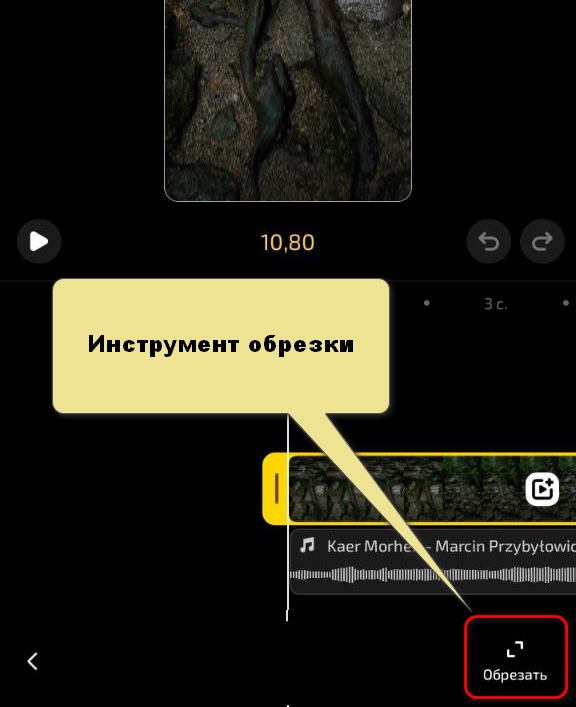
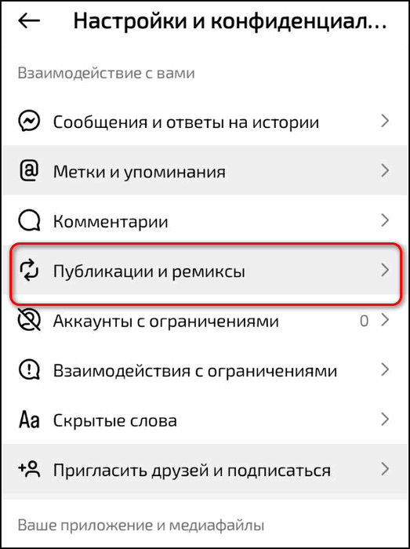
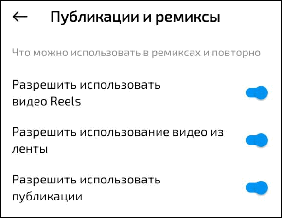
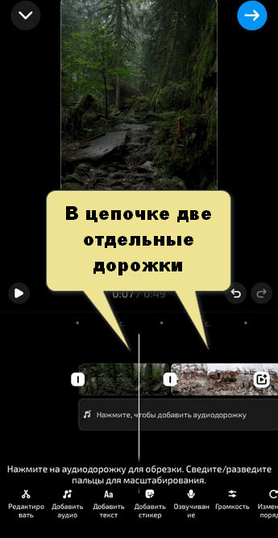

Ремикс и цепочки в Рилс Инстаграма

Цепочки и ремиксы в Инстаграм* - новые функции, направленные на создание креативного контента. Авторы могут записывать реакции на чужие клипы, дополнять их и склеивать свои старые.
Новые функции Рилсов в Инстаграме*
Ремикс и цепочки – это схожие функции для работы со своим или чужим контентом. Отличия функций:
| Функция | Ремикс | Цепочка |
| Запись | Во время первого клипа, на одной видеодорожке | После основной записи можно добавить еще несколько или снять через камеру |
| Продолжительность | В рамках оригинального клипа | До минуты |
| Редактирование | Как одно видео, но есть инструмент для разделения | Два отдельных видео |
Чтобы перейти к тесту или попробовать сразу записать видео, нужно перейти к дополнительным настройкам чужого клипа. Появится одноименная функция с выбором: «Ремикс или цепочка» и под каждый пунктом находится краткое описание, как подсказка для авторов.
После записи клипа, публикация считается совместной, так как в её создании принимали участие оба автора.
У новых инструментов есть свои параметры конфиденциальности: создатели контента могут запретить на свои клипы записывать ремиксы и цепочки. И если другой пользователь все же создал видео с чьим-то в ремиксе, то автору оригинала придет уведомление.
Как записать ремикс в Инстаграме*
Чтобы записать ремикс, нужно перейти к любому клипу (своему или чужому) и выбрать соответствующую функцию из дополнительного меню. Как сделать ремикс:
- Зайти в Инстаграм* - выбрать клип из своих или чужих.

- Нажать сверху три точки: «Сделать ремикс» - перейти к инструменту «Редактировать».

После этого, чтобы добавить новую запись, нужно выбрать «Обрезать» и уменьшить продолжительность оригинального клипа. И далее, уже добавить новую видеодорожку. Как и было сказано ранее, продолжительность ремиксов ограничена длинной оригинального видео. И на это не влияет функция «Обрезать». У таких записей общее музыкальное сопровождение, настройки отображения стикеров, текста. Редактировать как два отдельных клипа не выйдет, даже если изначально изменить оригинальную дорожку, а уже после добавлять новую.
Запретить другим пользователям записывать ремиксы
Размещая ремикс или цепочку, автор может ограничить действия посетителей страницы: отключить комментарии, запретить реакции, скрыть от некоторых пользователей, разрешить скачивание. Если от вас скрыли контент или заблокировали, то посмотреть можно как закрытый аккаунт полностью, так и отдельные сторис или reels. Если создатель контента не желает, чтобы на его записи делали реакции – он может отключить доступ через параметры конфиденциальности:
- Зайти в Инстаграм* - Настройки страницы.

- Публикации и ремиксы – Запретить использовать видео Reels/из ленты и просто посты.

Таким образом владелец страницы запретит возможность записывать ремиксы и цепочки на свои клипы. Ранее параметры конфиденциальности находились в самом меню редактирования Reels, но с последним обновлением стали общими для всех клипов.
Сделать цепочку в Инстаграме*
Цепочка – это продолжение основного видео, ограниченное до 1 минуты. Пользователь может добавлять еще несколько клипов, отдельно их редактировать и использовать разные фильтры. Фактически: это создание нового видео с добавлением других видеодорожек, но с общим музыкальным сопровождением. Как записать:
- Зайти в Инстаграм* - нажать по дополнительному меню.
- Выбрать: «Сделать цепочку» - появится оригинал видео.
- Нажать: «Далее» - добавить видеозапись из своей галереи.

- Перейти к редактированию.
Каждый отдельный клип можно отредактировать через инструменты «Скорость», «Разделить», «Обрезать» или же «Заменить». Отрезки можно озвучить, изменить порядок показа и добавить отдельный фильтры. Чтобы применить новые настройки цветокоррекции, пользователю нужно перейти к пункту «Фильтровать», выбрать часть, которую нужно отредактировать и настроить коррекцию.
Как добавить свою музыку
Добавить свою аудиодорожку на каждую отдельную часть не получится с через редактор Инстаграма*, зато есть другой способ: загружать аудио через другие приложения. И если воспользоваться таким вариантом, то музыкальный каталог социальной сети не пригодится. Или, есть еще один способ:
- Зайти в редактор цепочки видео – выбрать функцию: «Озвучить».
- Перейти к записи через микрофон – включить музыку на другом устройстве.
- Создать аудио и добавить к клипу.
После этого можно редактировать аудио и переходить к размещению. Записанная музыка таким способом, конечно, звучит хуже, но это один из быстрых вариантов. Первый способ – добавлять аудиодорожки через InShot. В этом приложении можно редактировать любую видеозапись, загружать аудио и вносить изменения в цветокоррекцию.
Отметить автора оригинала в Инстаграме*
После того, как был размещен ремикс или цепочка, автор оригинала получит уведомление и сможет подтвердить свое участие. Кроме этого, можно отметить на странице другого автора с помощью «Отметить людей» при размещении записи. Указать другого человека в публикации:
- Зайти в Инстаграм* - выбрать создание публикации и цепочки.
- Перейти к добавлению описания – функция: «Отметить людей».
- Указать автора оригинала – опубликовать.
Автор оригинала может отказаться от отметки или вовсе отказаться в параметрах страницы. Таким способом можно привлекать новую аудиторию, получить популярность. Записи, которые были созданы на известный оригинал, быстрее попадают в рекомендации. Также авторы могут договариваться о создании контента, чтобы обмениваться опытом или создавать эффективные рекламные коллаборации.